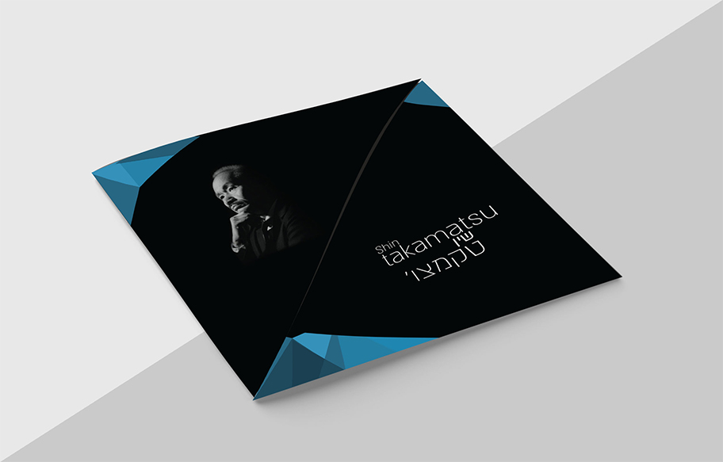
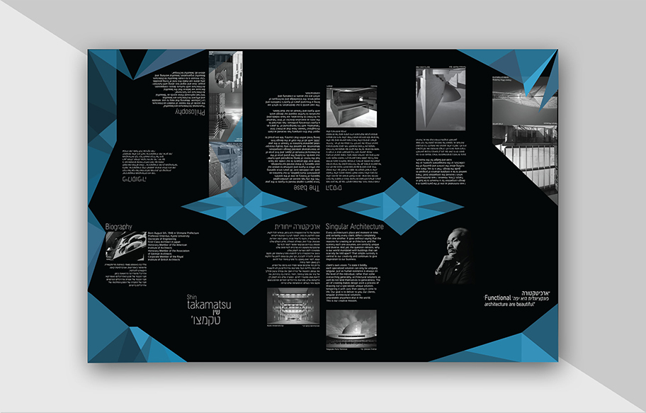
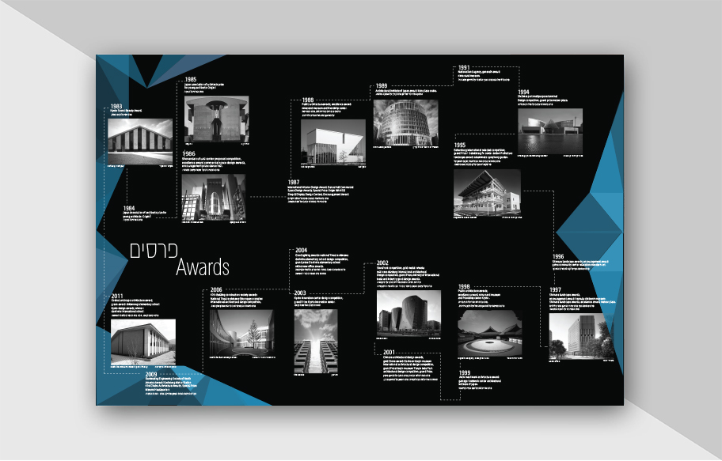
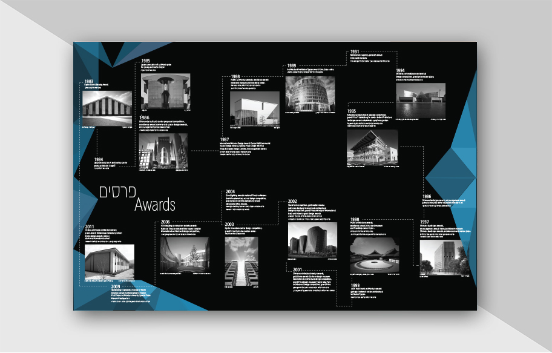
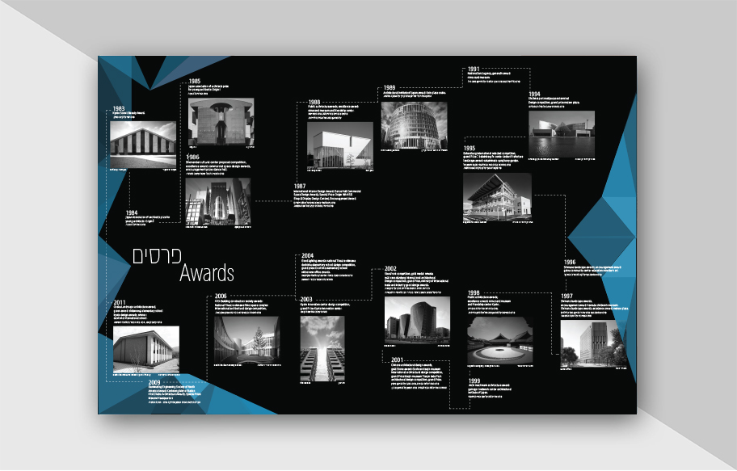

Shin Takamatsu
Design a brochure for architect Shin Takamatsu
The brochure is folded and when it is Opens up and reveals more
details until It reaches the size of half a sheet on both sides.
The design style of the broshwer was inspired by the style of architecture with
the geometric shapes in which Shin chose to build the buildings.


 

